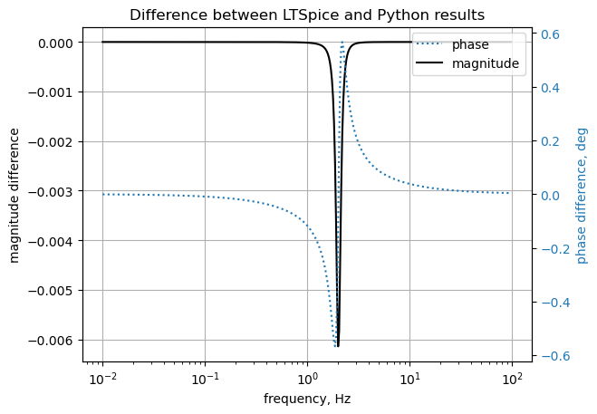

#import os
from sympy import *
import numpy as np
from tabulate import tabulate
from scipy import signal
import matplotlib.pyplot as plt
import pandas as pd
import SymMNA
from IPython.display import display, Markdown, Math, Latex
init_printing()18 Test 14
This test circuit has one unknown current source. This circuit was design to test a bug fix during generation of the A matrix where the C matrix didn’t get included if there was only one unknown current.
* test_14.asc
I1 1 0 1
R1 1 0 0.05
L1 1 2 0.025
C1 2 0 0.25
18.1 Load the net list
net_list = '''
I1 1 0 1
R1 1 0 0.05
L1 1 2 0.025
C1 2 0 0.25
'''18.2 Call the symbolic modified nodal analysis function
report, network_df, i_unk_df, A, X, Z = SymMNA.smna(net_list)Display the equations
# reform X and Z into Matrix type for printing
Xp = Matrix(X)
Zp = Matrix(Z)
temp = ''
for i in range(len(X)):
temp += '${:s}$<br>'.format(latex(Eq((A*Xp)[i:i+1][0],Zp[i])))
Markdown(temp)\(I_{L1} + \frac{v_{1}}{R_{1}} = - I_{1}\)
\(C_{1} s v_{2} - I_{L1} = 0\)
\(- I_{L1} L_{1} s + v_{1} - v_{2} = 0\)
18.2.1 Netlist statistics
print(report)Net list report
number of lines in netlist: 4
number of branches: 4
number of nodes: 2
number of unknown currents: 1
number of RLC (passive components): 3
number of inductors: 1
number of independent voltage sources: 0
number of independent current sources: 1
number of op amps: 0
number of E - VCVS: 0
number of G - VCCS: 0
number of F - CCCS: 0
number of H - CCVS: 0
number of K - Coupled inductors: 0
18.2.2 Connectivity Matrix
A\(\displaystyle \left[\begin{matrix}\frac{1}{R_{1}} & 0 & 1\\0 & C_{1} s & -1\\1 & -1 & - L_{1} s\end{matrix}\right]\)
18.2.3 Unknown voltages and currents
X\(\displaystyle \left[ v_{1}, \ v_{2}, \ I_{L1}\right]\)
18.2.4 Known voltages and currents
Z\(\displaystyle \left[ - I_{1}, \ 0, \ 0\right]\)
18.2.5 Network dataframe
network_df| element | p node | n node | cp node | cn node | Vout | value | Vname | Lname1 | Lname2 | |
|---|---|---|---|---|---|---|---|---|---|---|
| 0 | I1 | 1 | 0 | NaN | NaN | NaN | 1.0 | NaN | NaN | NaN |
| 1 | R1 | 1 | 0 | NaN | NaN | NaN | 0.05 | NaN | NaN | NaN |
| 2 | L1 | 1 | 2 | NaN | NaN | NaN | 0.025 | NaN | NaN | NaN |
| 3 | C1 | 2 | 0 | NaN | NaN | NaN | 0.25 | NaN | NaN | NaN |
18.2.6 Unknown current dataframe
i_unk_df| element | p node | n node | |
|---|---|---|---|
| 0 | L1 | 1 | 2 |
18.2.7 Build the network equation matrix
# Put matrices into SymPy
X = Matrix(X)
Z = Matrix(Z)
NE_sym = Eq(A*X,Z)
NE_sym\(\displaystyle \left[\begin{matrix}I_{L1} + \frac{v_{1}}{R_{1}}\\C_{1} s v_{2} - I_{L1}\\- I_{L1} L_{1} s + v_{1} - v_{2}\end{matrix}\right] = \left[\begin{matrix}- I_{1}\\0\\0\end{matrix}\right]\)
# turn the free symbols into SymPy variables
var(str(NE_sym.free_symbols).replace('{','').replace('}',''))\(\displaystyle \left( v_{1}, \ C_{1}, \ L_{1}, \ I_{1}, \ v_{2}, \ s, \ R_{1}, \ I_{L1}\right)\)
18.3 Symbolic solution
U_sym = solve(NE_sym,X)Display the symbolic solution
temp = ''
for i in U_sym.keys():
temp += '${:s} = {:s}$<br>'.format(latex(i),latex(U_sym[i]))
Markdown(temp)\(v_{1} = \frac{- C_{1} I_{1} L_{1} R_{1} s^{2} - I_{1} R_{1}}{C_{1} L_{1} s^{2} + C_{1} R_{1} s + 1}\)
\(v_{2} = - \frac{I_{1} R_{1}}{C_{1} L_{1} s^{2} + C_{1} R_{1} s + 1}\)
\(I_{L1} = - \frac{C_{1} I_{1} R_{1} s}{C_{1} L_{1} s^{2} + C_{1} R_{1} s + 1}\)
18.4 Construct a dictionary of element values
element_value_keys = []
element_value_values = []
for i in range(len(network_df)):
if network_df.iloc[i]['element'][0] == 'F' or network_df.iloc[i]['element'][0] == 'E' or network_df.iloc[i]['element'][0] == 'G' or network_df.iloc[i]['element'][0] == 'H':
element_value_keys.append(var(network_df.iloc[i]['element'].lower()))
element_value_values.append(network_df.iloc[i]['value'])
else:
element_value_keys.append(var(network_df.iloc[i]['element']))
element_value_values.append(network_df.iloc[i]['value'])
element_values = dict(zip(element_value_keys, element_value_values))element_values\(\displaystyle \left\{ C_{1} : 0.25, \ I_{1} : 1.0, \ L_{1} : 0.025, \ R_{1} : 0.05\right\}\)
18.5 DC operating point
Both ?
V4 and I2 are active.
NE = NE_sym.subs(element_values)
NE_dc = NE.subs({s:0})
NE_dc\(\displaystyle \left[\begin{matrix}I_{L1} + 20.0 v_{1}\\- I_{L1}\\v_{1} - v_{2}\end{matrix}\right] = \left[\begin{matrix}-1.0\\0\\0\end{matrix}\right]\)
U_dc = solve(NE_dc,X)Display the numerical solution
Six significant digits are displayed so that results can be compared to LTSpice.
table_header = ['unknown', 'mag']
table_row = []
for name, value in U_dc.items():
table_row.append([str(name),float(value)])
print(tabulate(table_row, headers=table_header,colalign = ('left','decimal'),tablefmt="simple",floatfmt=('5s','.6f')))unknown mag
--------- ---------
v1 -0.050000
v2 -0.050000
I_L1 0.000000The node voltages and current through the sources are solved for. The Sympy generated solution matches the LTSpice results:
--- Operating Point ---
V(1): -0.05 voltage
V(2): -0.05 voltage
I(C1): -1.25e-14 device_current
I(L1): -1.24345e-14 device_current
I(I1): 1 device_current
I(R1): -1 device_current
The results from LTSpice are slightly different in some cases starting at the 2nd decimal place.
18.5.1 AC analysis
Solve equations for \(\omega\) equal to 1 radian per second, s = 1j. V1 is the AC source, magnitude of 10
NE = NE_sym.subs(element_values)
NE_w1 = NE.subs({s:1j})
NE_w1 # display the equations\(\displaystyle \left[\begin{matrix}I_{L1} + 20.0 v_{1}\\- I_{L1} + 0.25 i v_{2}\\- 0.025 i I_{L1} + v_{1} - v_{2}\end{matrix}\right] = \left[\begin{matrix}-1.0\\0\\0\end{matrix}\right]\)
U_w1 = solve(NE_w1,X)Display the numerical solution
Six significant digits are displayed so that results can be compared to LTSpice.
table_header = ['unknown', 'mag','phase, deg']
table_row = []
for name, value in U_w1.items():
table_row.append([str(name),float(abs(value)),float(arg(value)*180/np.pi)])
print(tabulate(table_row, headers=table_header,colalign = ('left','decimal','decimal'),tablefmt="simple",floatfmt=('5s','.6f','.6f')))unknown mag phase, deg
--------- -------- ------------
v1 0.049996 179.279336
v2 0.050310 179.279336
I_L1 0.012578 -90.720664 --- AC Analysis ---
frequency: 0.159155 Hz
V(1): mag: 0.049996 phase: 179.279° voltage
V(2): mag: 0.0503105 phase: 179.279° voltage
I(C1): mag: 0.0125776 phase: -90.7207° device_current
I(L1): mag: 0.0125776 phase: -90.7207° device_current
I(I1): mag: 1 phase: 0° device_current
I(R1): mag: 0.999921 phase: 179.279° device_current
18.5.2 AC Sweep
Looking at node 21 voltage and comparing the results with those obtained from LTSpice. The frequency sweep is from 0.01 Hz to 1 Hz.
NE = NE_sym.subs(element_values)
NE\(\displaystyle \left[\begin{matrix}I_{L1} + 20.0 v_{1}\\- I_{L1} + 0.25 s v_{2}\\- 0.025 I_{L1} s + v_{1} - v_{2}\end{matrix}\right] = \left[\begin{matrix}-1.0\\0\\0\end{matrix}\right]\)
U_ac = solve(NE,X)18.5.3 Plot the voltage at node 2
H = U_ac[v2]H\(\displaystyle - \frac{8.0}{s^{2} + 2.0 s + 160.0}\)
num, denom = fraction(H) #returns numerator and denominator
# convert symbolic to numpy polynomial
a = np.array(Poly(num, s).all_coeffs(), dtype=float)
b = np.array(Poly(denom, s).all_coeffs(), dtype=float)
system = (a, b)x = np.logspace(-2, 2, 400, endpoint=False)*2*np.pi
w, mag, phase = signal.bode(system, w=x) # returns: rad/s, mag in dB, phase in degLoad the csv file of node 10 voltage over the sweep range and plot along with the results obtained from SymPy.
fn = 'test_14.csv' # data from LTSpice
LTSpice_data = np.genfromtxt(fn, delimiter=',',skip_header=1)# initaliaze some empty arrays
frequency = np.zeros(len(LTSpice_data))
V_1 = np.zeros(len(LTSpice_data)).astype(complex)
V_2 = np.zeros(len(LTSpice_data)).astype(complex)# convert the csv data to complex numbers and store in the array
for i in range(len(LTSpice_data)):
frequency[i] = LTSpice_data[i][0]
V_1[i] = LTSpice_data[i][1] + LTSpice_data[i][2]*1j
V_2[i] = LTSpice_data[i][3] + LTSpice_data[i][4]*1jPlot the results.
Using
np.unwrap(2 * phase) / 2)
to keep the pahse plots the same.
fig, ax1 = plt.subplots()
ax1.set_ylabel('magnitude, dB')
ax1.set_xlabel('frequency, Hz')
plt.semilogx(frequency[0:-1], 20*np.log10(np.abs(V_2)[0:-1]),'-r') # Bode magnitude plot
plt.semilogx(w/(2*np.pi), mag,'-b') # Bode magnitude plot
ax1.tick_params(axis='y')
#ax1.set_ylim((-30,20))
plt.grid()
# instantiate a second y-axes that shares the same x-axis
ax2 = ax1.twinx()
color = 'tab:blue'
plt.semilogx(frequency[0:-1], np.unwrap(2*np.angle(V_2)[0:-1]/2) *180/np.pi,':',color=color) # Bode phase plot
plt.semilogx(w/(2*np.pi), phase,':',color='tab:red') # Bode phase plot
ax2.set_ylabel('phase, deg',color=color)
ax2.tick_params(axis='y', labelcolor=color)
#ax2.set_ylim((-5,25))
plt.title('Magnitude and phase response')
plt.show()
fig, ax1 = plt.subplots()
ax1.set_ylabel('magnitude difference')
ax1.set_xlabel('frequency, Hz')
plt.semilogx(frequency[0:-1], np.abs(V_2[0:-1]) - 10**(mag/20),'-k')
#plt.semilogx(frequency[0:-1], 20*np.log10(np.abs(V_2[0:-1]))-mag,'-k')
#plt.semilogx(w/(2*np.pi), mag_v3,'-b') # Bode magnitude plot
ax1.tick_params(axis='y')
#ax1.set_ylim((-30,20))
plt.grid()
# instantiate a second y-axes that shares the same x-axis
ax2 = ax1.twinx()
color = 'tab:blue'
plt.semilogx(frequency[0:-1], np.angle(V_2[0:-1])*180/np.pi-phase,':',color=color,label='phase') # Bode phase plot
#plt.semilogx(w/(2*np.pi), phase_v3,':',color='tab:red') # Bode phase plot
ax2.set_ylabel('phase difference, deg',color=color)
ax2.tick_params(axis='y', labelcolor=color)
#ax2.set_ylim((-5,25))
ax2.plot(np.NaN, np.NaN, color='k', label='magnitude')
plt.legend()
plt.title('Difference between LTSpice and Python results')
plt.show()
The SymPy and LTSpice results have small error.